設備の導入から保全・移設・処分まで、ワンストップで
新品機械販売部
- 標準機販売
- ラインセット販売
- 専用設計機販売
- 自動化システム
サービスエンジニア部
- 修理・保守点検
- 移設・レイアウト変更
- 設備の処分・撤去
- 静的精度測定
- 設備補器の製作
中古部（販売・買取）
- 設備の査定・買取・下取り
- 在庫品の販売
- 中古ネットワークから取寄せ
- オークション出品・入札
- 導入
- 保全・修理
- 移設
- 処分・買取
標準機からラインセット、専用機、自動化まで
← 写真は横にスワイプできます
工作機械（NC旋盤・マシニングセンタ）
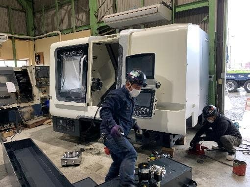
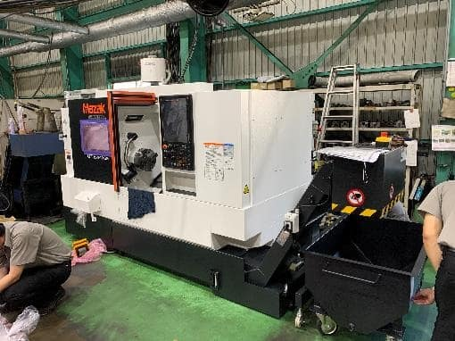
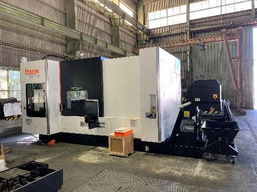
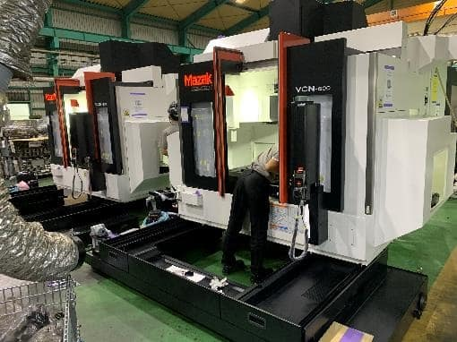
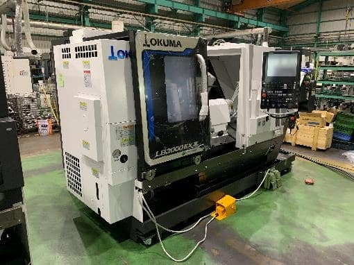
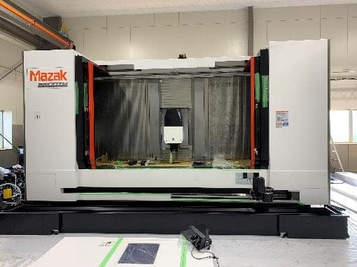
小型機・汎用機
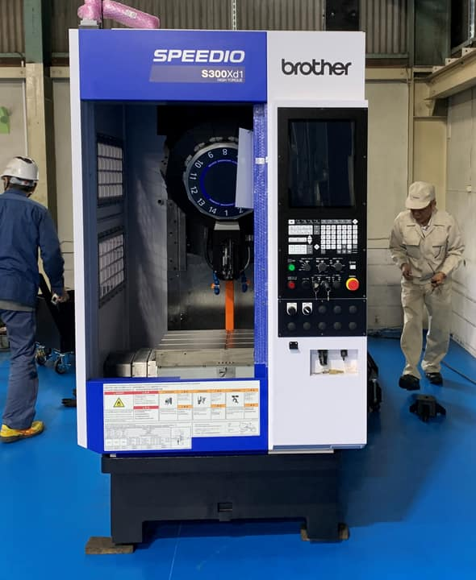
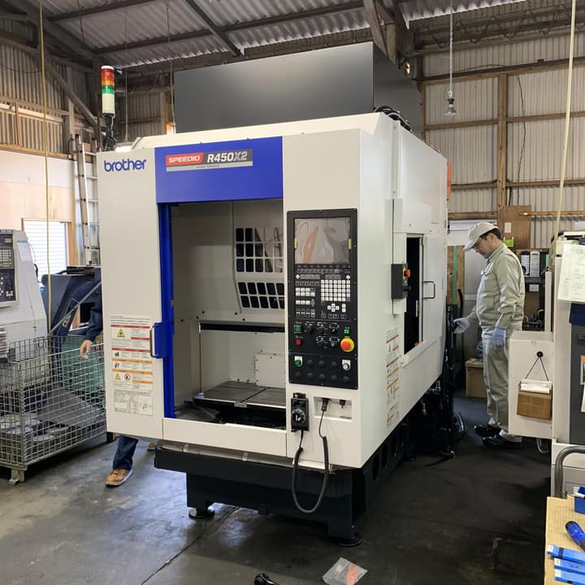
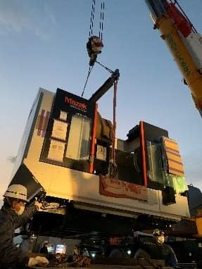
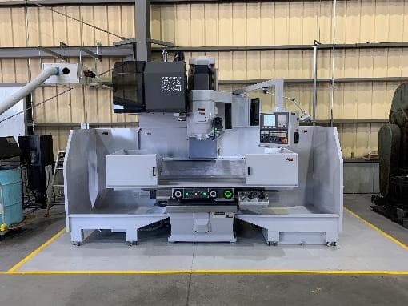
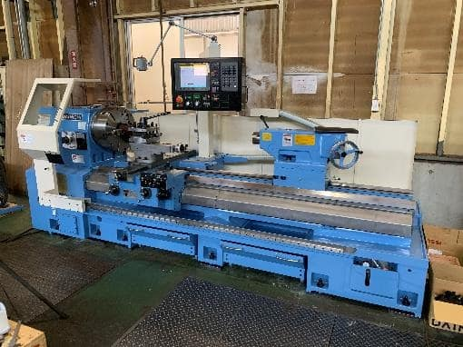
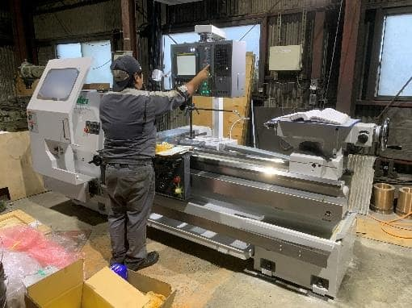
大型機械
ロール旋盤・ロール研削盤・大型横中ぐり盤等、大型機械の販売実績多数。
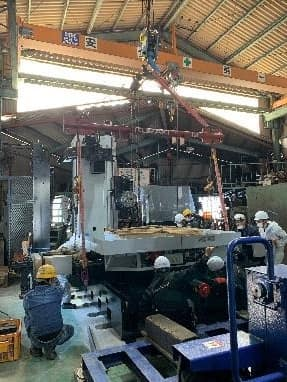
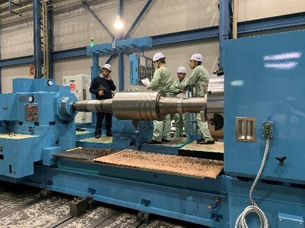
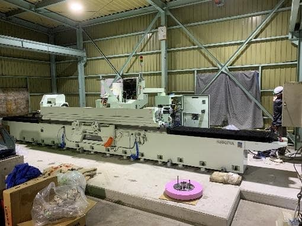
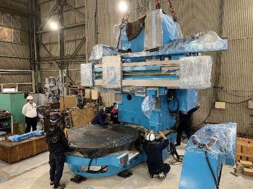
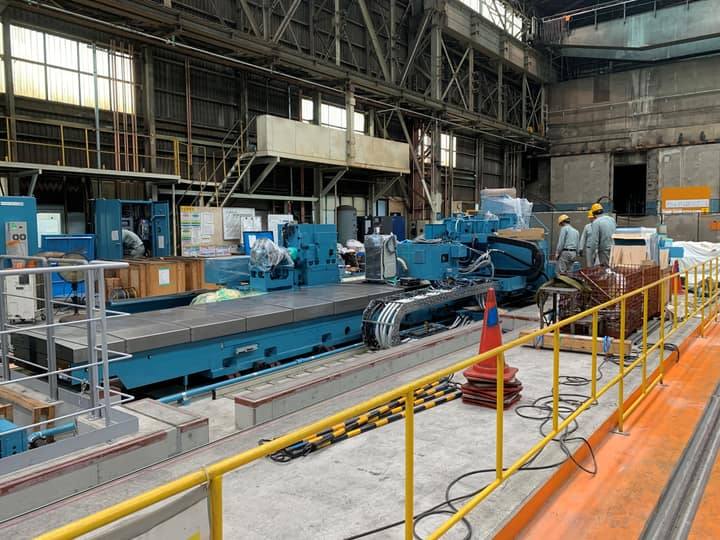
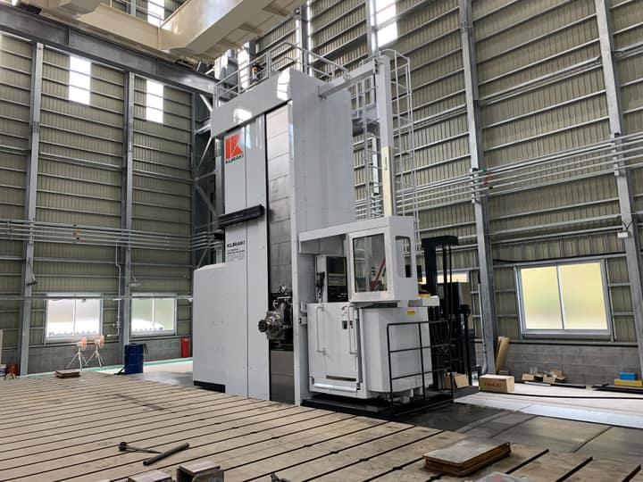
鍛圧・切断機械／測定器
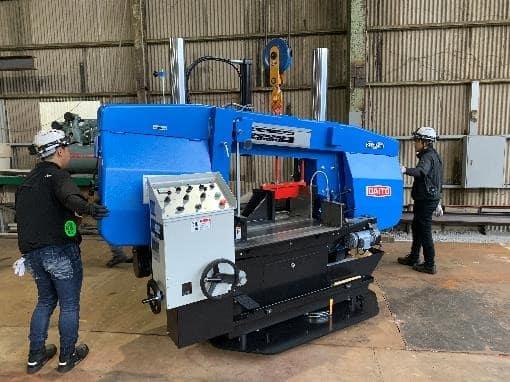
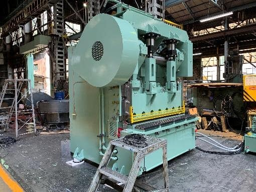
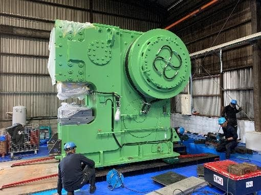
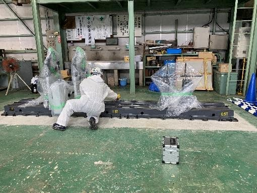
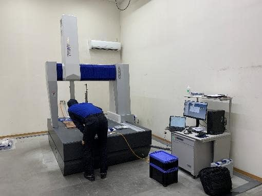
自動化システム
ロボット・周辺装置と工作機械の組み合わせを、機械選定からご提案します。
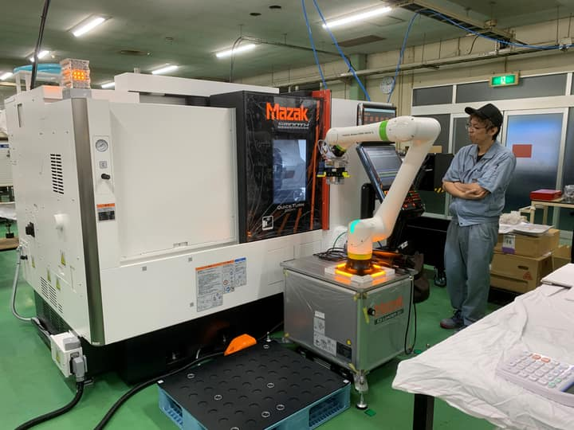
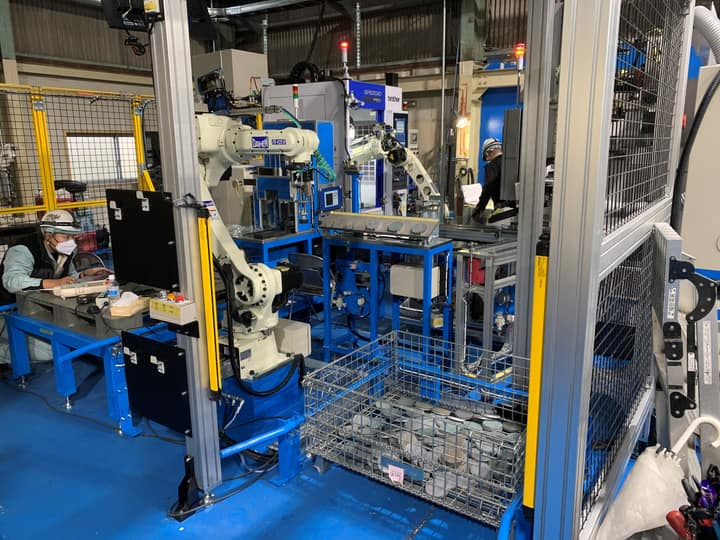
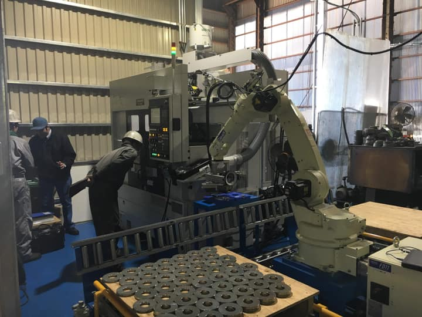
専用設計機
標準機では対応できない作業に、専用機を！
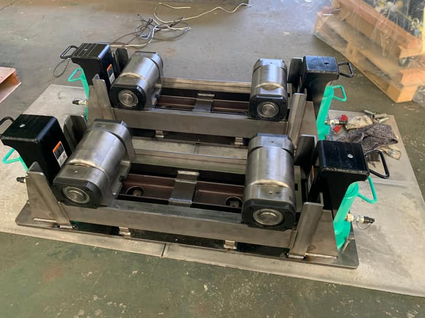
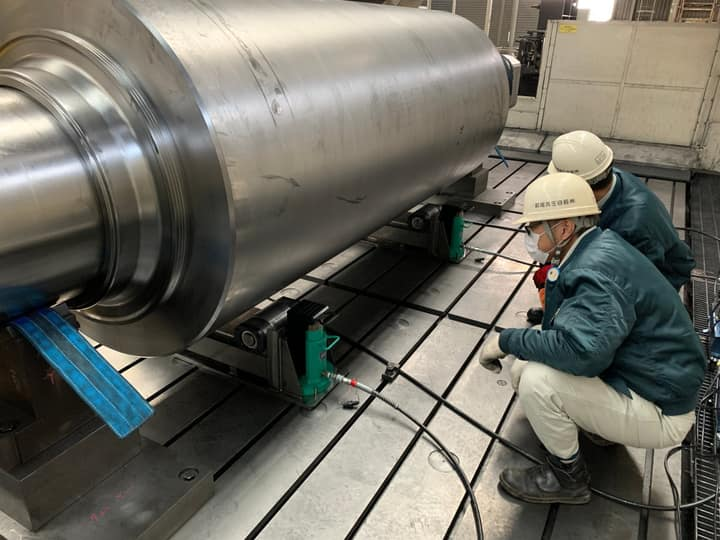
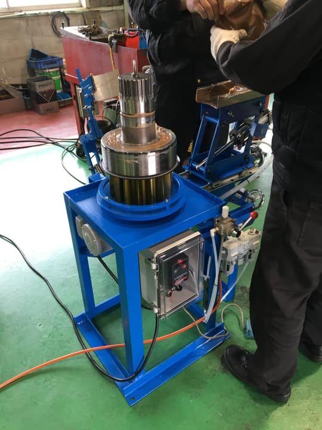
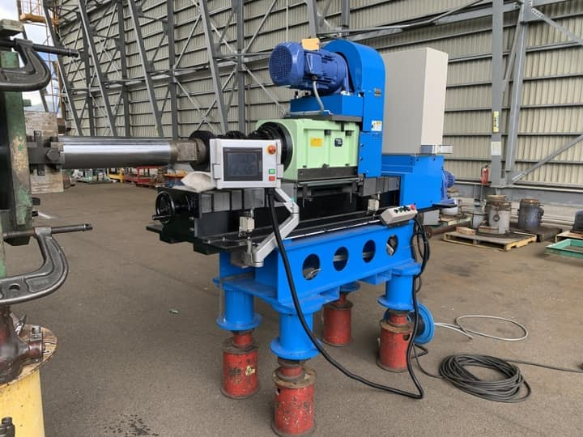
使わなくなった設備の買取から、中古機の調達まで
- 設備の査定・買取・下取り
- 在庫品の販売
- 中古ネットワークから取寄せ
- オークション出品・入札
古物商許可番号：愛媛県公安委員会 第821020000932号
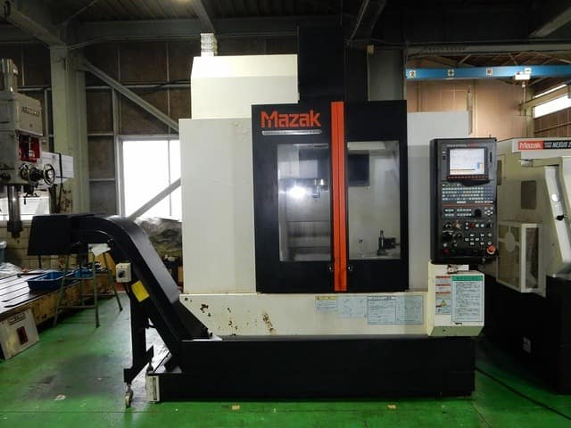
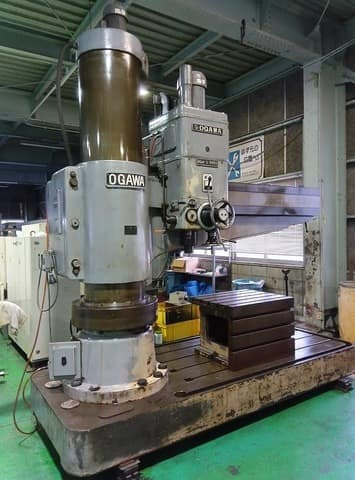
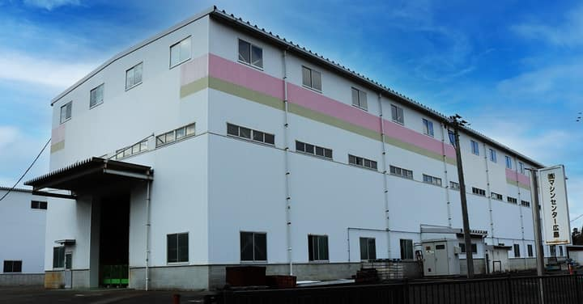
修理事例
メーカー廃業機・古い機械・海外製機械も直します
タップすると写真と「症状・原因・対応」が開きます。保守点検・静的精度測定・設備補器の製作も承ります。
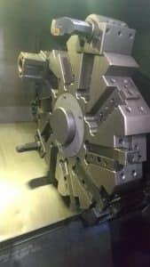
①NC旋盤 刃物台タレット衝突による精度不良の改善
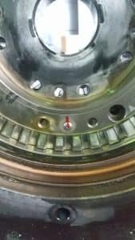
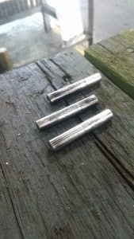
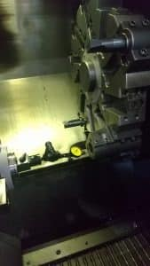
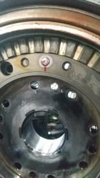
- 症状
- タレットが衝突した後、加工精度が出なくなった
- 原因
- 衝突でカービック（位置決め歯）が動いた可能性
- 対応
- 位置決めピンを確認（損傷なし）し、カービックを打ち込み直し。主軸に対する刃物台の直角度を修正し、ボーリングホルダで基準芯を出して微調整
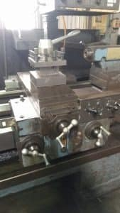
②NC旋盤 X軸ボールねじ交換
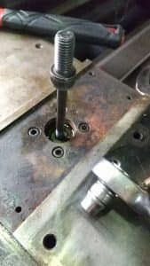
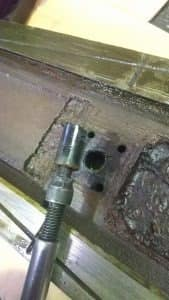
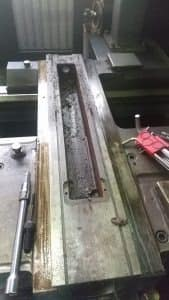
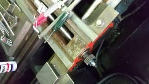
- 症状
- バックラッシュが過大になった
- 原因
- 水溶性切削油がボールねじ付近に入り込んでヘドロ化し、錆・腐食が発生
- 対応
- 新品のボールねじに交換
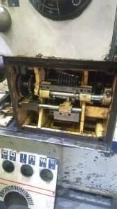
③汎用旋盤（メーカー廃業）送り変速シフト軸の新作
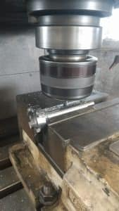
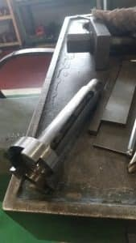
- 症状
- ギヤの歯が欠損
- 原因
- 加工中の衝突と推測
- 対応
- 欠けた歯を溶接で肉盛りし、歯当たりを調整して組込み。シャフトは新規に製作して交換
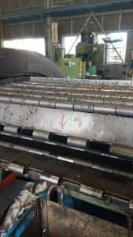
④チップコンベア修理
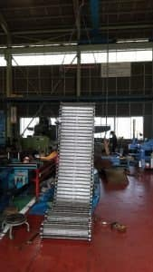
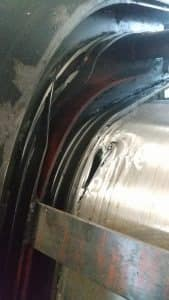
- 症状
- ローラーが摺動するレールガイドが千切れて欠損。本体にも穴あきが多数
- 対応
- 穴の開いた箇所にパッチ板を当てて溶接補修
⑤中ぐり盤 鋳物製コラムトップカバーの溶接補修
- 症状
- コラム上部のカバーがクレーンと衝突して割れた
- 難しさ
- バランスウエイト用チェーンのスプロケット受けが付く、強度が必要な部品
- 対応
- TIG溶接＋補強プレートをボルト止め。欠損箇所にはカラーを溶接
⑥立旋盤 X軸送りメネジの新作
- 対応
- 送り軸のメネジと、バックラッシュ除去用のメネジを新作（オネジのさらい加工を含む）
⑦大型NC旋盤 主軸モーターとプーリー軸の心出し
- 対応
- 補修した主軸モーターに交換し、2点受けのプーリー軸受けとモーターの心出しを実施
⑧フライス アングルヘッドのベアリング交換
- 症状
- アングルヘッド主軸の外径が痩せていた
- 対応
- 主軸外径を補修し、ベアリングを交換
⑨プレス パッキン類を現行品に適合
- 症状
- 油漏れ。戦時中のものと思われるプレスで、パッキンはなめし革製だった
- 対応
- 現行規格のピストンパッキン・ロッドパッキン・ダストシールが入るよう溝を削正・追加して組込み
⑩ポーランド製大型旋盤 サドルギヤボックス修理
- 症状
- 早送りができない（電磁クラッチが滑る）
- 原因
- ギヤボックス内の潤滑不良（ヘドロでポンプが詰まり）でクラッチに油が届かず、ディスクが摩耗。電圧低下による接点焼け・ベアリング破損も発生
- 対応
- 部品交換により復帰
⑪環境改善機器（ミストコレクタ）取付工事
- 課題
- 切削油の吐出やワーク回転でミストが発生し、作業者の健康に影響
- 対応
- ミストを回収して作業環境を改善。後付け施工の実績多数。主にLOSMA（イタリア）製を採用
大型機械の解体・搬出・再据付から、処分まで
機械移設・レイアウト変更
設備処分
撤去・搬出・運搬をまとめてお引き受けし、廃棄証明書（弊社書式）も発行します。
新居浜で創業40年余
私達は
安心最適なマシンと高い技術力を提供し
お客様の喜びを励みに
地域社会の繁栄に貢献いたします。
| 商号 | 株式会社 西原マシンツール |
|---|---|
| 代表者 | 代表取締役社長 西原 修成 |
| 創業・設立 | 創業 昭和59年／設立 昭和63年 |
| 所在地 | 愛媛県新居浜市多喜浜六丁目5-17 |
| 社員数 | 社員8名・役員2名 |
| 業務内容 | 機械販売・修理・中古機械売買 |
| 建設業許可 | 愛媛県知事許可 第018517号（機械器具設置工事業） |
| 古物商許可 | 愛媛県公安委員会 第821020000932号 |
設備のお困りごと、まずはご相談ください
- 部品が手に入らない古い機械を直したい
- 加工精度が出ない機械を見てほしい
- 工場のレイアウトを変更したい
- 使わなくなった設備を売却・処分したい